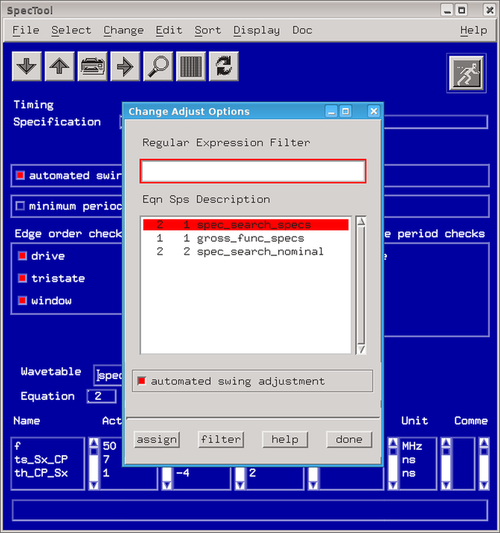
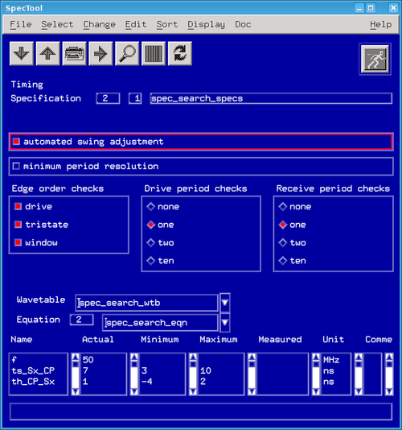
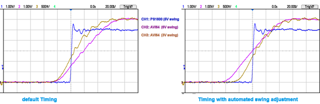
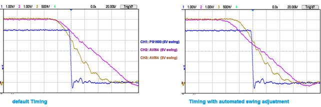

Using Automatic Swing Adjustment
Automatic swing adjustment can be enabled in the timing setup and for specs. If you enable automatic swing adjustment for a waveform set swings are automatically adjusted for all timing sets within this waveform set. This is done for all level sets used in combination with this waveform set.
To enable swing adjustment open the timing setup window and proceed as follows:
- Open the SpecTool.
- Click Change and select Change Automatic Swing Adjustment (see the figure below).
- Enable automated swing adjustment for the selected specification.
- Click assign and close the dialog by clicking done.

To enable swing adjustment for the currently selected specification proceed as follows:
- Open the SpecTool.
- Enable Show Timing Info in menu Display (see the figure below).
- Enable the automated swing adjustment for the selected specification.

Effect of the Automatic Swing Adjustment
The following plots shows an example for the effect of the Automatic Swing Adjustment for a rising edge and a falling edge. The left side shows the original waveforms with Automatic Swing Adjustment disabled. The right side shows the waveforms with Automatic Swing Adjustment enabled: The timing for the three signals is adjusted so that they move closer to each other at a medium level.

